The Example Games
Five complete, playable programs ship in examples/:
- GLOOM, a real-time raycast shooter that exists in five languages
- GRUBWELL, a first-person dungeon crawler
- a demoscene reel whose scenes reload live while it plays
- Gator Quest, a multiplayer terminal RPG
- JaiDoom, DOOM itself rebuilt in pure JaiScript, which fetches its game data on first launch
Each one teaches something specific, and each one is genuinely fun to run. In the first three C++ is a deliberately thin shell (a VT console, key input, a seeded Rng, a clock, file IO), and everything you see is script.
The first three double as determinism tests: each has a headless --smoke mode that checks a seeded run against the hashes it must produce.
Every one also ships a drag-drop shim: a single .jai file that re-creates, in script, the few things the C++ shell provides (a seeded RNG, flags, logging, the console). Dropping it onto the standalone runner plays the game with no engine target built at all. The runner's --backend=interp runs the same scripts on the tree-walking interpreter, so the shims are also where a game's two backends are compared. The C++ hosts link the library without the interpreter and run the VM.
The screenshots are real frames, in their real colors: docs/site_tools/capture_examples.py runs each game headless at a fixed seed and frame and draws its terminal output cell for cell, two pixels to a half block. Select one to see it full size.
Building them
The games are part of the normal CMake build (JAISCRIPT_BUILD_EXAMPLES=ON by default when JaiScript is the top-level project). Configure once, then build the targets you want:
cmake -S . -B build -DCMAKE_BUILD_TYPE=Release
cmake --build build --config Release --target jai_gloom jai_crawler jai_demoreel jaiscript_runnerBinaries land in build/bin/ with every generator. Play the Release builds. A Debug build of the engine is many times slower, and these games cast rays every frame. The gap is quantified in Performance. On Windows, use Windows Terminal rather than the legacy console. It parses the color escapes about sixteen times faster. Each program parses its own flags. The shims take their arguments after -- in the shape their README shows.
GLOOM (examples/gloom): the five-language yardstick
A real-time 2.5D raycast shooter in the terminal (one tight four-map episode of corridors, keycards, secrets, and things that roar before they charge), written entirely in JaiScript.
Each floor has its own light: torchlight on sandstone, coolant glow in the warrens, furnace heat in the foundry, the throne's red dark. Distance fades into the floor's haze. Walls carry bricks, plates, conduits and doors whose lock lights glow, monsters stay readable down a dark corridor with their eyes lit, and the gun in your hand sways as you walk and kicks as you fire.
Under the view a panel shows big numerals, bars, a face that bleeds as you do and your keycards. The title, the floor tally (its numbers count up), the death and the victory pages are pixel art too.
Frames of the seeded autopilot in the showcase look (--smoke --look showcase, seed 666):

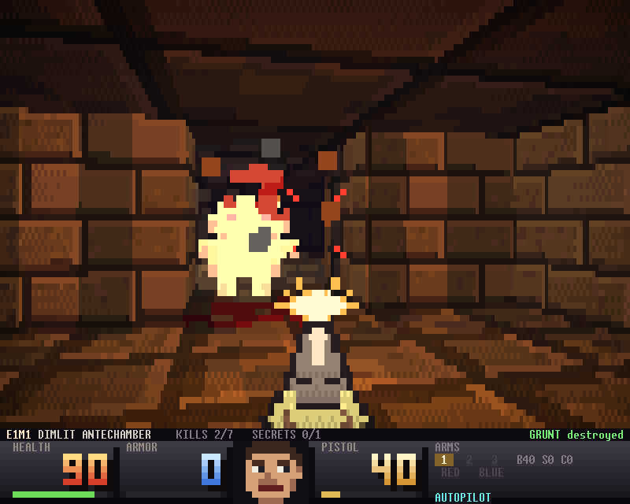

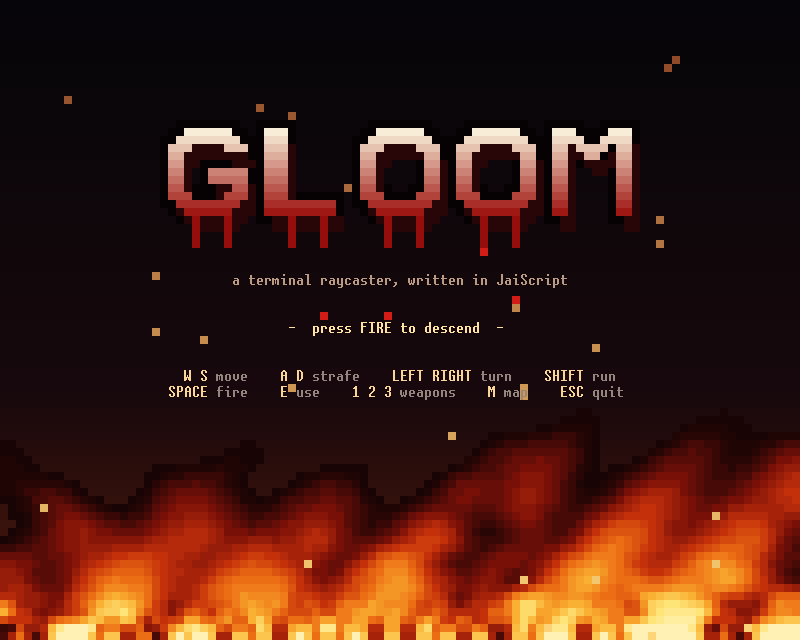

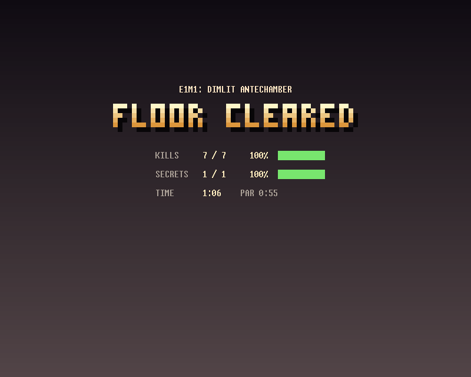
It is also the anchor of a five-language experiment. The same game, to the same spec, against the same shared C++ host and the same seeded RNG, was reimplemented in Squirrel, Lua, ChaiScript, and Python. Each was written the way a competent user of that language would write it, and each was required to reproduce the JaiScript reference bit-exactly at fixed state-hash checkpoints. All four did.
That is the point of GLOOM: it is where the language's claims go to be audited, and the comparison is blunt in both directions. On wall clock, in the measured row:
- LuaJIT's JIT runs a tick in 0.097 ms and Lua 5.4.8 in 0.397.
- The JaiScript VM takes 0.634 ms serial and 0.461 on eight workers, ahead of Squirrel 3.2's 1.165.
On expressiveness, only JaiScript stated every part of the design natively:
- coroutine methods living in fields drive the enemy brains
- typed fields hold the hot state
- template strings build the HUD
- the wall rays and particle pool run through
parallel_transform, the only in-language parallelism in the set, deterministic at any worker count
The rival ports and the harness that times them live in a separate comparison project, not in this package. The JaiScript side re-measures here with jai_gloom --smoke.
That look is the showcase look, the default when you play. The ports reproduce the reference look, the frames the spec defines, and --smoke draws it unless told otherwise, so the comparison times the same frames in every language. Both looks run the same simulation through the same per-pixel renderer; what differs is tables built at boot and on map load, the gun and the panel.
build/bin/jai_gloom # play: seed 666, VM backend
build/bin/jai_gloom --pix sext # 2x3 subpixels (needs a Unicode-13 font, e.g. Cascadia Mono)
build/bin/jai_gloom --256color # a terminal without 24-bit color (the default where COLORTERM says nothing)
build/bin/jai_gloom --ascii # a terminal without block glyphs, such as the Linux text console
build/bin/jai_gloom --look reference # the frames the ports draw
build/bin/jai_gloom --smoke --ticks 300 # headless: the conformance + perf protocol
build/bin/jai_gloom --bench 300 # the autopilot plays while you read ms/frame
build/bin/jaiscript examples/gloom/gloom.jai # no host build at all: the drag-drop shim
build/bin/jaiscript examples/gloom/gloom.jai -- --smoke --ticks 300Expected: --smoke runs the seeded autopilot headless and prints its row (total time, ms/tick, the hash of the whole frame stream, the final STATE_HASH). At --seed 666 --ticks 300 those are 7fecc09815bb64e0 and 3580805725 at every --workers count; with --look showcase the frames hash to 6559224cca20d1f0 and the STATE_HASH is the same. The shim's -- --smoke checks the same hashes against the reference checkpoint table instead. The README in examples/gloom lists those checkpoints and the worker counts they were verified at.
The drag-drop shim (gloom.jai) re-creates what the C++ shell provides (the seeded RNG, the flags, the logging) in pure script on top of the runner's console builtins, so it plays the same game the compiled host does. The Squirrel, Lua and ChaiScript ports run against the identical host and the Python port standalone, all in the separate comparison harness: same episode, same seeds, same outcome, five runtimes.
| key | action |
|---|---|
w / s | move forward / back |
a / d | strafe |
| left / right | turn |
| space / ctrl | fire |
e | use: doors, suspicious walls, the exit switch |
| shift | run |
1 2 3 | pistol / scattergun / hexcaster |
m | automap |
| esc or Ctrl+C | quit (the screen, cursor and colors come back) |
The drag-drop shim guesses the color depth through the runner's env_var: 24-bit where COLORTERM is truecolor or 24bit and in Windows Terminal, xterm-256 elsewhere. -- --truecolor and -- --256color override it. It takes --ascii and --look the same way.
GRUBWELL: dungeons of the unwashed (examples/crawler)
A first-person, step-based dungeon crawler in the spirit of the 1991 shareware first-person crawlers (garish corridors, a compass, monsters that get bigger as they walk at you), written entirely in JaiScript, about 6,700 lines of it. Under the pixels it is a complete roguelike (ten floors, kin and professions, skills, affix loot, identify-by-use potions, a boss).
The view is a one-ray-per-column DDA raycaster drawn in half blocks: walls, floors and ceilings in procedural textures, lit by the torch in your hand and by the sconces on the walls. Billboard sprites stand behind a per-column z-buffer, and a step or a turn glides through in-between frames.
Every turn plays out in the view. Hits throw damage numbers, the slain turn white-hot and melt into sparks of their colour, and class skills fly down the corridor as glowing bolts that light the walls they pass. Monsters announce themselves the first time they see you, each breed in its own words. Slingers wind up a throw you can dodge by breaking line of sight, a slain Gloop splits in two, and a mimic chest sends up a gold loot beam to lure you in. Fine loot sends up a beam of its rarity's colour, and a rare find banners its name. Floor 1 opens on a set piece: JAI's statue ahead, the bones of the last one down at your feet with their glowing blade, and a Grublin that has already seen you.
Around it sits a cockpit of four panes (ahead, left, right and behind) and six framed boxes: the log, a half-block map, the compass, your character, and what is in sight. A title screen looks down the Well, death washes your last view in blood, victory comes in rainbow fire.
The codebase is the most approachable of the games: small enough to read in a sitting, big enough to show every language feature in context. It is also the hot-reload showpiece. Save any script while you play and the game reloads it under the running dungeon, or press R. Each reload sweeps a scanline down the panes and logs what it kept (floor, turn, monsters, items, HP). A broken edit is refused with its file, line and error, and the run goes on under the old rules until the next save.

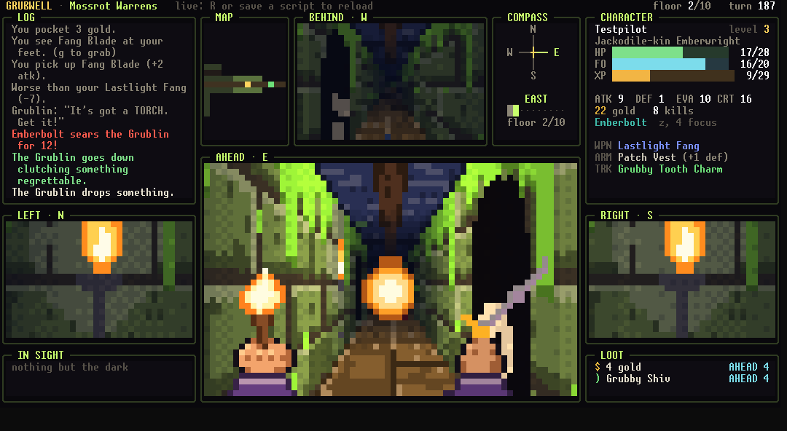

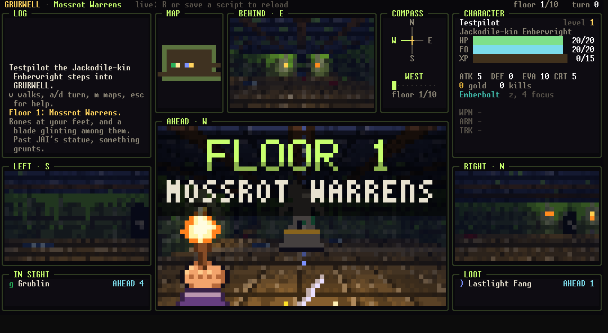

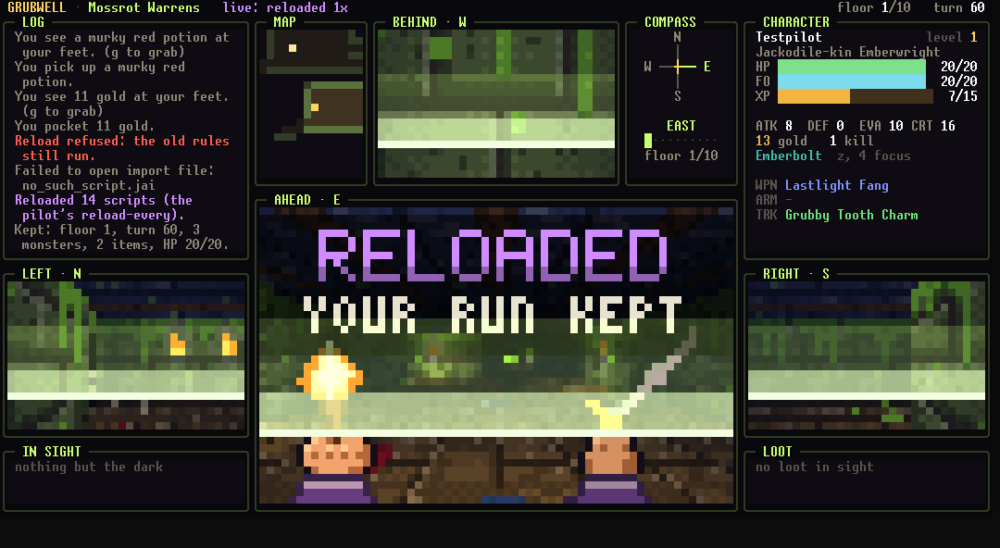

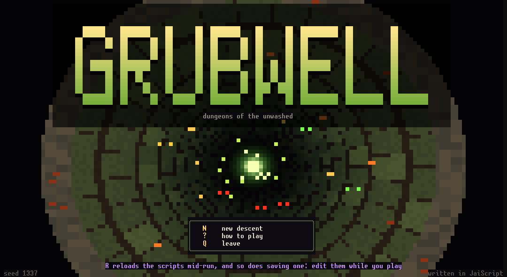

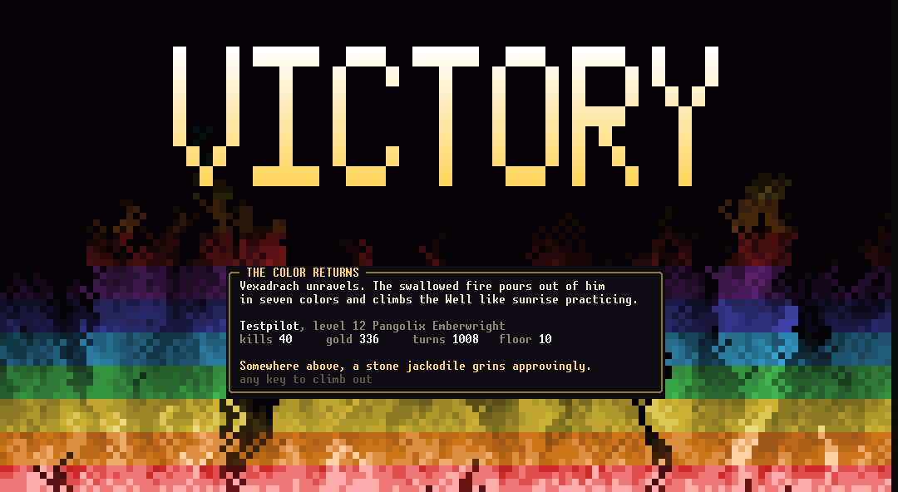
build/bin/jai_crawler # the title screen, seed 1337
build/bin/jai_crawler --colors 256 # the xterm 256-colour palette (default: 24-bit when COLORTERM says so)
build/bin/jai_crawler --ascii # no Unicode block glyphs, for the Linux text console
build/bin/jai_crawler --smoke --seed 6 --turns 1500
build/bin/jai_crawler --smoke --seed 6 --turns 1500 --reload-every 100 # hot reloads mid-run, same hash
build/bin/jaiscript examples/crawler/scripts/crawler.jai # the runner shim: no host build needed
build/bin/jaiscript examples/crawler/scripts/crawler.jai -- smoke turns 1500 seed 6The cockpit wants a console of about 135x37; a smaller one gets the forward view alone, as large as fits, down to 80x24, and a console resized mid-run re-fits. Both hosts take the alternate screen and give it back, with the cursor and the colours, on every exit, Ctrl+C included.
Expected: the --smoke run prints STATE_HASH: 2459230215 (the pilot reaches floor 8 and dies there to a Marrowmaw on turn 839). The hash folds player, monsters, items, RNG state and facing, so a one-bit divergence anywhere in the run changes it. With --reload-every 100 the pilot re-runs every script each hundred turns, and its first try, of a missing file, is refused. It still prints the same hash.
The shim's own smoke run prints one hash on both --backend=vm and --backend=interp. The README in examples/crawler lists the seeds it was verified with: up to 1,500 turns, plus a god-mode autopilot that reaches floor 10 and kills the boss on both backends at the same turn with the same hash.
| key | action |
|---|---|
w / up | step forward; into a monster, attack |
s / down | step back |
a d / left right | turn 90 degrees |
q / e | sidestep left, right |
. | wait a turn |
z | class skill, down your facing |
g | pick up |
i | the pack: a letter to look closer, then e use or equip, d drop |
p / E | quaff the first potion / equip the best upgrade |
> | descend (on the stairs) |
m | the overhead map; there wasd, hjkl and the arrows step by compass direction, and your facing follows |
v | the forward view alone, or with LEFT, RIGHT and BEHIND around it |
c / ? | character sheet / keys |
esc | pause: s save and quit, q quit, r reload the scripts |
R | reload the scripts (saving one does the same) |
S / Q | save and quit / quit (asks once more) |
jai_demoreel (examples/demoreel)
Seventeen auto-advancing truecolor scenes, transitions, title cards, and a finale where the word JAISCRIPT ignites out of a wall of rainbow fire, cools to neon and rolls the credits. Every effect is coded in scenes/*.jai. The HUD shows the frame cost as the reel plays. Press r and every scene hot-reloads without restarting.
The scenes: PLASMA, STARFIELD, TUNNEL, DONUT, JULIA, LAVALAMP, PIPEDREAM, POWDER, BOIDS, GLOBHUNTER, CANYONRUN (a voxel-terrain flight in pure 16.16 fixed point), SPONGEWORKS (a raymarched Menger sponge, the VM's floating-point showcase), BANNERFALL (Verlet cloth that tears thread by thread), CHROME, FIRE, OSSUARY (a skull-headed spider crawling a raymarched, morphing surface), FINALE.
Frames from jaiscript demoreel.jai -- shot N at T, which numbers the scenes from one and writes scene N at T seconds to shot.txt (the terminal frame) and shot.bmp (its pixels):

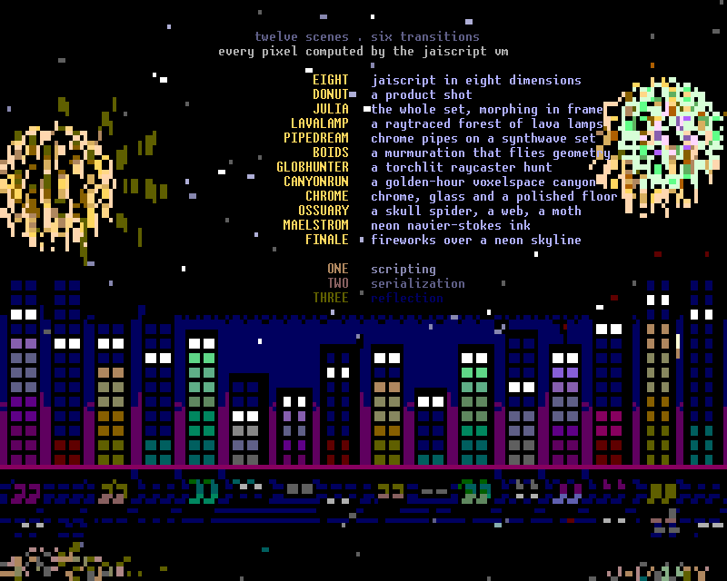

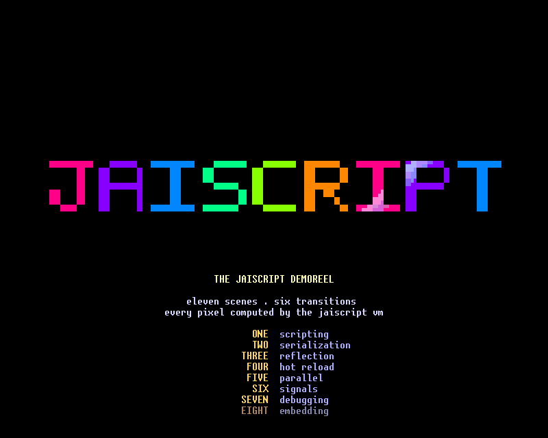

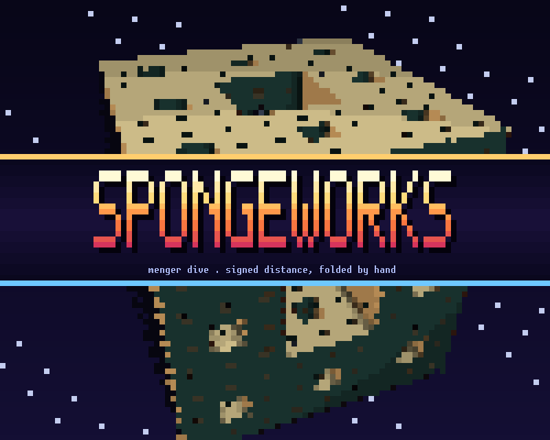

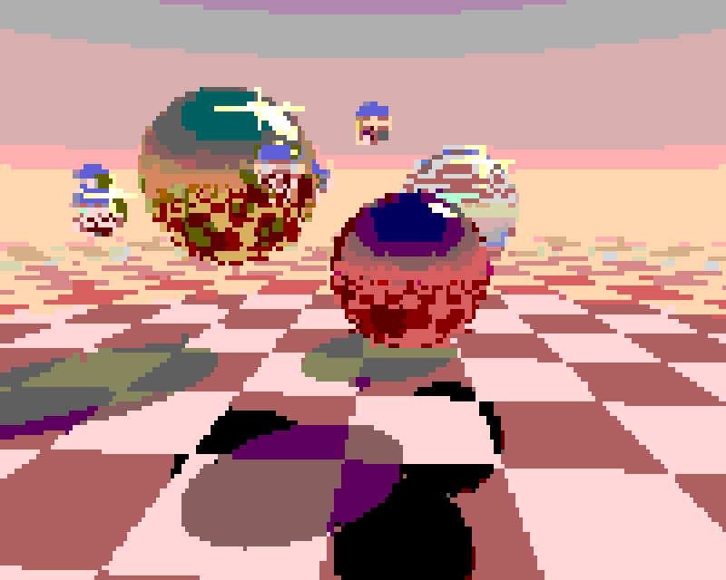
build/bin/jai_demoreel # the reel, 30 fps pacing
build/bin/jai_demoreel --smoke # headless: the frame-stream hash + perf
build/bin/jai_demoreel --ascii # one density character per cell, for terminals without block glyphs
build/bin/jai_demoreel --capture I # print scene I as plain text (ANSI stripped)
build/bin/jai_demoreel --precompiled # boot from demoreel.jaibite (saved on first run)
build/bin/jaiscript examples/demoreel/demoreel.jai # drag-drop shim: the reel on the bare runner, one engine
build/bin/jaiscript examples/demoreel/demoreel.jai -- color 256 # the shim in xterm-256 color (by default it reads the depth as the exe does)
build/bin/jaiscript examples/demoreel/demoreel.jai -- frames 60 # headless self-test: sizes, a stream hash, timingjai_demoreel picks its color depth from the terminal: 24-bit under COLORTERM=truecolor (or 24bit) and in Windows Terminal. Everywhere else it is the xterm-256 cube (macOS Terminal.app, the Linux console, legacy conhost). --truecolor and --256color override it. q, ESC, Ctrl+C and SIGTERM all restore the cursor, the colors and the main screen.
Expected: --smoke runs the whole reel headless and prints its row (boot time, total time, ms/frame, cells per second, and the hash of the entire frame stream, 76322bdbe2343c29). --expect H exits non-zero unless the hash is H. The README in examples/demoreel carries the verified hash and the frame counts it was run to.
| key | action |
|---|---|
r | hot-reload every scenes/*.jai from disk |
h | toggle the HUD: a status bar (scene, backend, frame ms, fps) and a key bar that fills as the scene plays |
f | freeze the clock (render keeps running) |
n / p / space / arrows | next / previous scene |
1..9, 0 | jump straight to a scene (0 = scene 17, the finale; keys are one-based, --capture indices are zero-based) |
q / ESC | quit |
The reel doubles as a whole-program benchmark. Every frame is 100×40 terminal cells drawn as a 100×80 half-block pixel grid, and --smoke times both backends over the full 17-scene run. Parity is absolute: frame streams are byte-identical across backends over the 1,700-frame smoke run that visits every scene and over a full-duration 6,975-frame run. All scene randomness goes through the host's seeded rng, so a one-cell divergence between backends fails the run.
Gator Quest (examples/gatorquest)
An old-school open-world RPG for the terminal, set in Gatorland: you are a gator, six tyrants rule the six realms beyond the Lilygates, and each hoards a Relic Scale.
- Swordplay and spellcraft, fishing, mining, smithing and cooking, quests and bosses
- Raccoon Bandits who steal your gold and flee to the Raccoon Warrens (a burrow maze below the sewers, where cornering one gets the purse back)
- up to 16 players in one swamp over a network
Frames from the headless capture modes, -- shot title and -- tour screen 150x44:

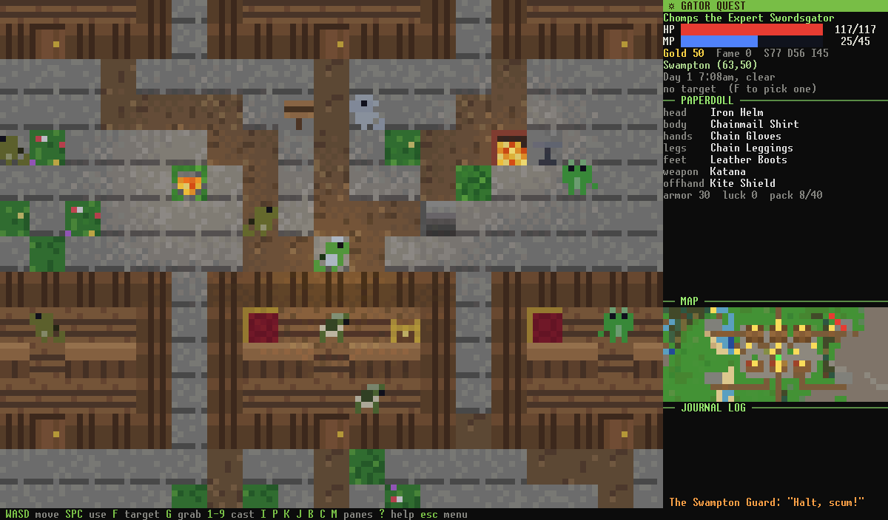

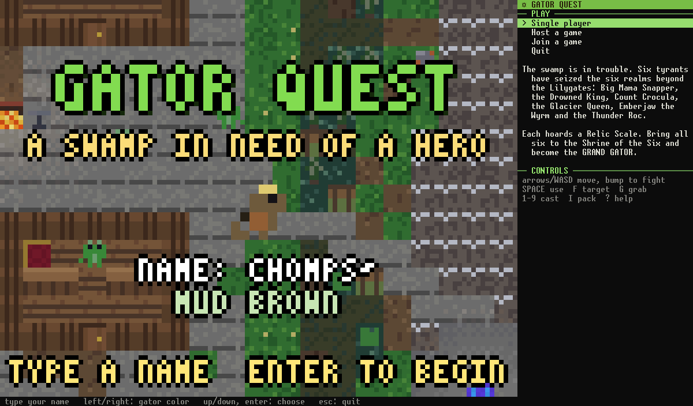

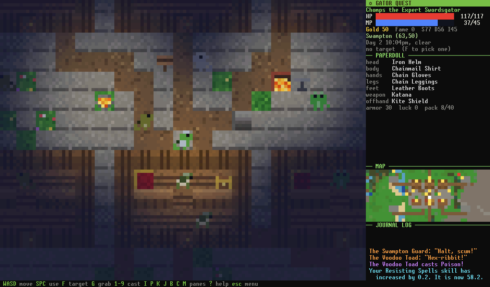
It runs on the stock jaiscript runner with nothing else. The world, the art, the sound effects and the music are all generated by about 14,000 lines of script, and there is no game-specific C++ at all. It is the largest program in the repository and the one that shows the language at application scale: client-side movement prediction against a host, plain-file saves, and a dedicated server mode.
build/bin/jaiscript examples/gatorquest/scripts/gatorquest.jai # play (single player, host or join from the title)
build/bin/jaiscript examples/gatorquest/scripts/gatorquest.jai -- smoke # headless: a scripted session, then STATE_HASH
build/bin/jaiscript examples/gatorquest/scripts/gatorquest.jai -- serve port 28777 # a dedicated host with no screen
build/bin/jaiscript examples/gatorquest/scripts/gatorquest.jai -- predtest # the movement-prediction test over loopbackExpected: -- smoke prints the scripted session's journal and plan, then one STATE_HASH line, the same on --backend=vm and --backend=interp. Use a terminal with 24-bit color and UTF-8, at least 100x30. examples/gatorquest/README.md has the controls, the multiplayer commands and the save layout. -- smoke ticks 2000 seed 1 bots 2 prints STATE_HASH: 3218840367 on both backends.
Against Lua. A Lua port is kept with the comparison harness outside the JaiScript sources. It ports what the smoke session simulates (world generation, the content tables, mobiles, spawners, combat, the bots) to Lua 5.4, with generated LuaJIT and Luau twins. parity.py checks that every port prints the JaiScript run's output line for line, STATE_HASH included, over 27 seed, tick and bot configurations. run_comparison.py times them.
The verdict: on this simulation the VM takes
- 1.18 to 1.21 times Lua 5.4's time per tick
- 1.20 to 1.23 times Luau's interpreter
- about 2.1 times Luau's native code
- 6.4 to 7.1 times LuaJIT's trace compiler
These are medians of five on one P core, the 6,000-tick 4-bot and 2,000-tick 2-bot sessions. The measured row has the times, and run_comparison.py re-measures on your machine.
JaiDoom (examples/jaidoom)
JaiDoom is a from-scratch DOOM engine written in JaiScript, and it ships in the repository as source. The game data does not live there, and it does not need to: on first launch the game fetches what it needs itself.
It downloads the Freedoom project's two free IWADs from Freedoom's own release, and, if you accept the prompt, the shareware episode of DOOM, which id Software has allowed to be passed around unmodified since 1993. Each file is checked against a published SHA-256 before it is kept, and the archive is unpacked. The sound and music lumps are decoded into a cache, so the title screen comes up with everything in place.
The loading screen, the verification and the unpacking sequence are JaiScript like the rest of the game:
- the runner contributes a small host class,
Download, and one host function,zip_extract - the checksums are the standard library's
crypto::sha256_file
wads/SOURCES.txt records where every file came from and under which license. If you own the registered DOOM or DOOM II data, put the WAD in wads/ and name it on the command line.
The game finds its folder from its own location (root_script_dir(), with the executable's folder as the second candidate), so dropping jaidoom.jai onto jaiscript.exe starts it from any working directory. When the game folder is read-only the downloads and saves go to the per-user data folder instead. examples/jaidoom/README.md has the controls and the commands.
JaiDoom is a fan project, not affiliated with or endorsed by id Software; DOOM is a trademark of id Software.
DOOM. Not a homage, not a slice: a from-scratch reimplementation of the DOOM engine in over 11,000 lines of pure JaiScript, playing the original shareware episode:
- the textured BSP renderer with COLORMAP light diminishing and palette flashes
- a 35 Hz fixed-point playsim
- monsters with the full state-machine AI (infighting included)
- hitscan and projectile combat
- doors, lifts, stairs, teleporters, secrets
- five weapons with bob and muzzle flash, powerups
- the status bar, the automap, menus, intermission tallies
- 16-player networked deathmatch and co-op
It renders to a terminal through sub-cell block glyphs, in 24-bit color where COLORTERM is truecolor or 24bit, in Windows Terminal and in any Windows console, and through the xterm-256 palette elsewhere (macOS Terminal.app), each color matched to its nearest in OKLab. -- --truecolor and -- --256color override it. There is no C++ in the game at all. It runs on the stock standalone runner. Its entire host surface is the runner's generic builtins: terminal IO (read_key, key_down) plus the NetServer/NetChannel socket classes, with its clocks and frame pacing from the standard library's time::. Capabilities any terminal game needs; no engine-specific C++ anywhere.
Frames from scripts/shots.jai, which stands the player in sight of a monster, fires for a few scripted tics and writes what the terminal would show. They use Freedoom Phase 1, the free IWAD the game fetches first, rather than id's shareware data:

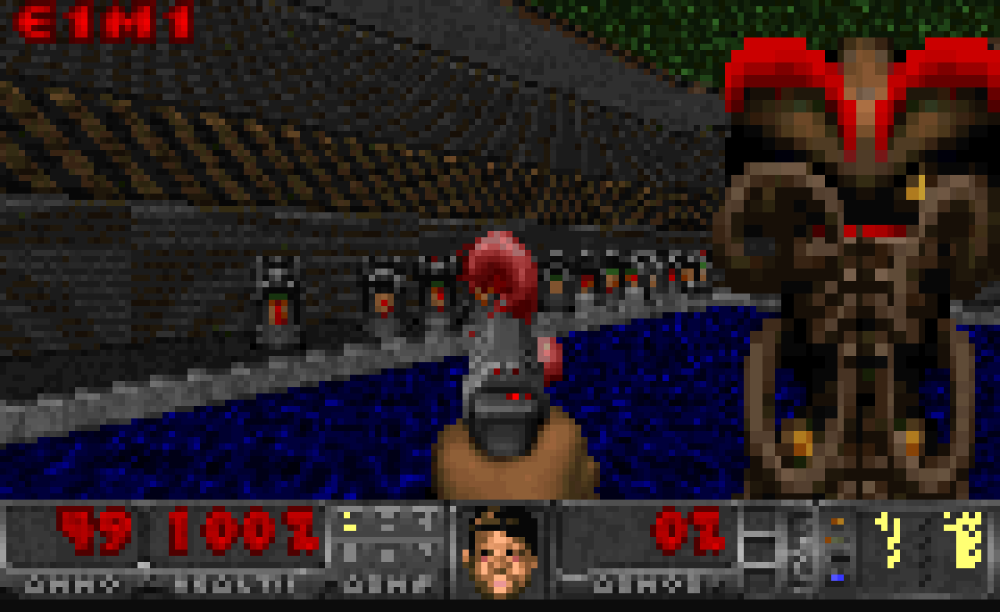

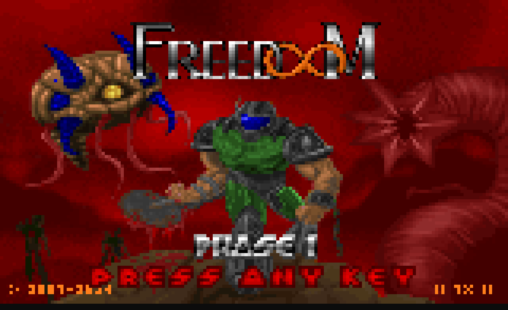

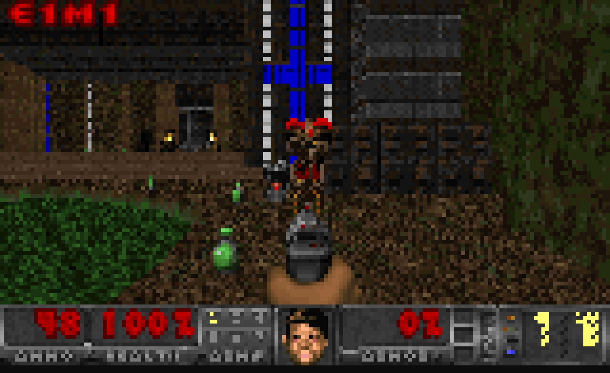
The multiplayer is the same story one level up: the entire wire protocol is script. A host session runs a NetServer star hub (assigning player slots, relaying packets, and acting as the co-op authority for monsters and doors). Each client holds one NetChannel to the host, and every packet is a small JSON map dispatched by type.
Ghost players are net-driven sprites in the same mobj pool the monsters use. Deathmatch tracks frags with an in-game scoreboard, and the host's lobby counts joiners until ENTER launches everyone into the map together.
Why it matters here: it exercises everything the language claims, at once.
- The WAD loader parses the binary format in-language.
binary::readerwalks the lumps, and abinary::layoutnames the directory entry.to_byteshands whole lumps over asarray<uint8>for thearray<int>tables the hot loops index, andbinary::writerbuilds the WAV, MIDI and BMP files it writes (see Containers & Strings). - The playsim runs id-faithful 16.16 fixed-point math with BAM angles on
int64, comfortably inside checked-overflow territory, so a math bug throws instead of corrupting the world. - The framebuffer and all hot map data are typed arrays. The BSP walk is plain recursion. Enemy brains and platform movers are coroutines.
- E1M1 alone is 467 vertices, 475 linedefs, 85 sectors, and 138 things, parsed and playable in seconds.
And it is fast enough to be a game, not a demo. On the VM backend a full play session (monsters awake and firing, doors moving, HUD drawn) runs at about 1.3 ms a frame, more than twenty-one times inside DOOM's own 28.5 ms tick budget. A recorded 3,984-tic playthrough replays hash-identically on both backends, on the VM at about 20× real time. The frame cost and its simulation/render/blit split are in Performance.
Polling keyboard input
The standalone runner's read_key() is nonblocking: it consumes one queued key-down edge and returns an empty string when none is pending. Letters are lowercased; arrows, escape, enter and tab use named keys. key_down(name) checks a held key instead. Poll queued edges each tick without waiting for one. Use held state for movement. These functions come from the runner, so an embedding host must provide its own input bindings.
string key = read_key();
while (!key.empty()) {
if (key == "esc") { /* request exit */ }
key = read_key();
}